Regex adalah singkatan dari Regular Expression.
Regex merupakan sebuah reks (string) yang mendefinisikan sebuah pola pencarian sehingga dapat membantu kita untuk melakukan matching (pencocokan), locate (pencarian), dan manipulasi teks.
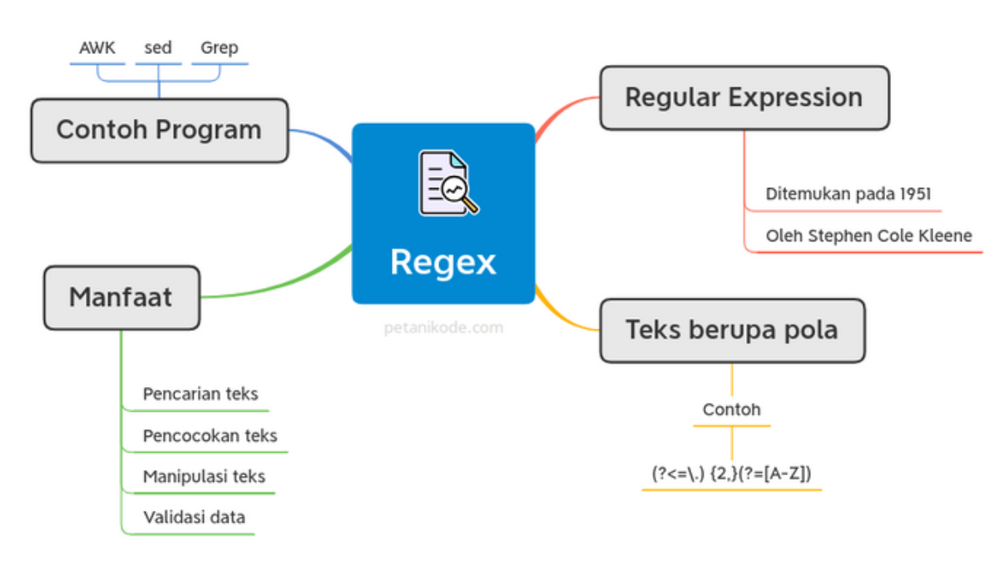Kode HTML :
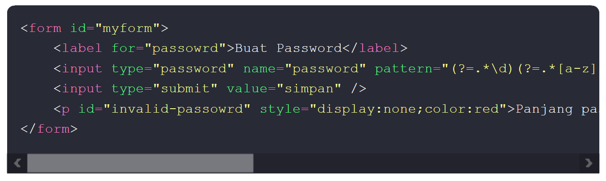Perhatikan atribut pattern, atribut ini digunakan untuk menyimpan pola regex. Pada contoh di atas, polanya adalah pengecekan karakter yang diinputkan pada password.
Kode Javasript :
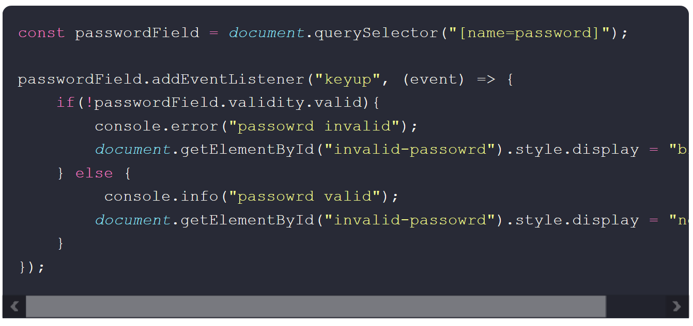Pada contoh ini, kita tidak menggunakan regex di dalam Javascript. Melainkan kita menggunakannya pada HTML.
Kode javascript di atas, hanya bertugas untuk mengecek apakah nilai dari field password sudah sesuai atau tidak dengan yang ada pada atribut pattern.
Berikut hasilnya :
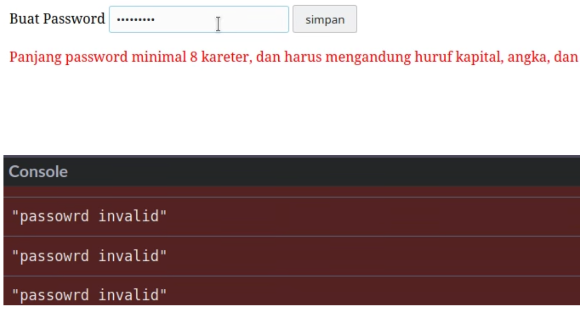Contoh :
Misal kita ingin mencari teks pada syslog. Kita bisa melihat isi file syslog dengan cat.
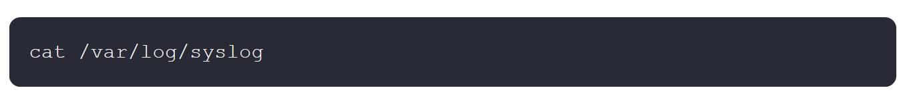Untuk mengetahui log apa saja yang berkaitan dengan jaringan, dapat memanfaatkan grep untuk mencari teks tertentu pada log
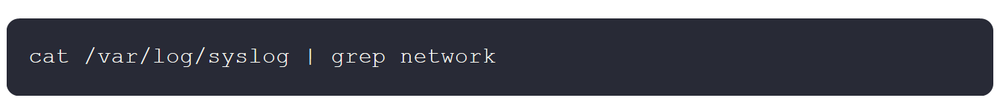Kata network ini adalah pola regex yang akan menjadi kata kunci pencarian.
Hasilnya :
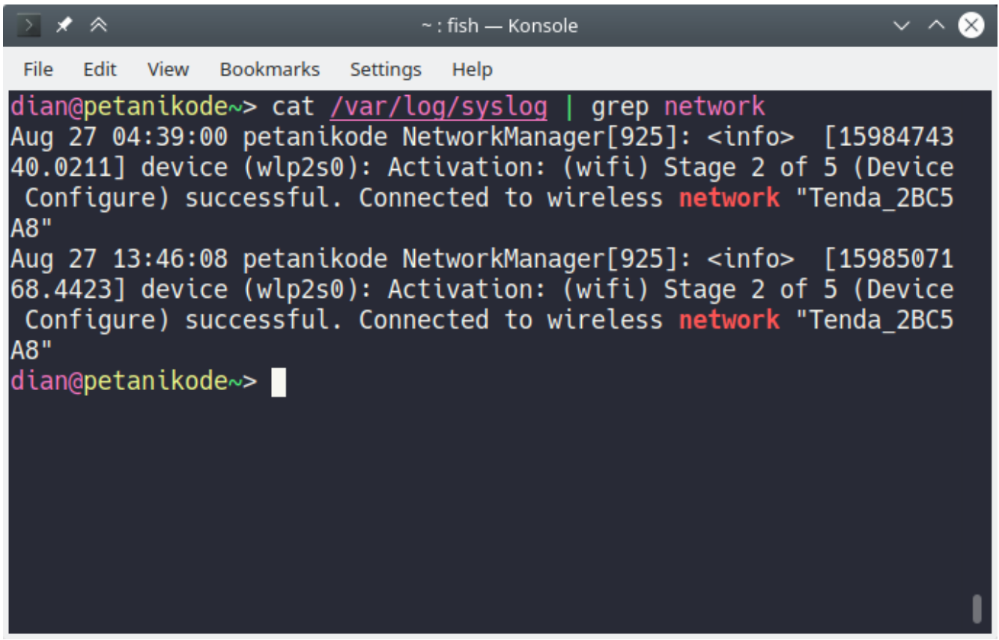Salah satu manfaat regex yang saya suka adalah find and replace. Fitur ini membantu saya untuk mengelola teks dan konten lebih efisien.
Tek dibawah akan diubah :
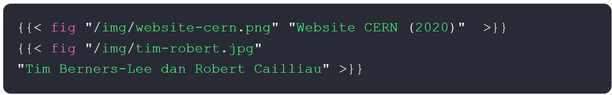Menjadi :
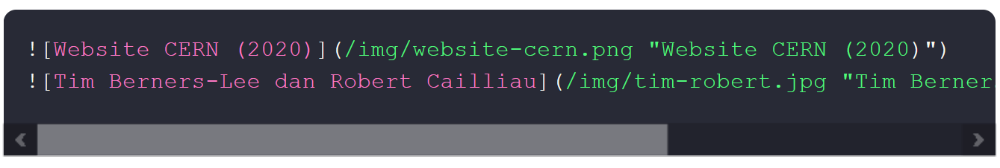Maka pola pencariannya :
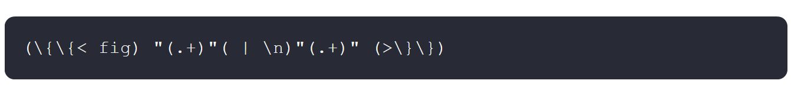Dan pola untuk mengubahnya :
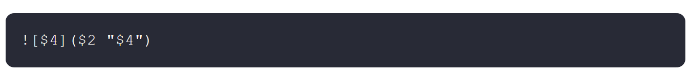Hasilnya :
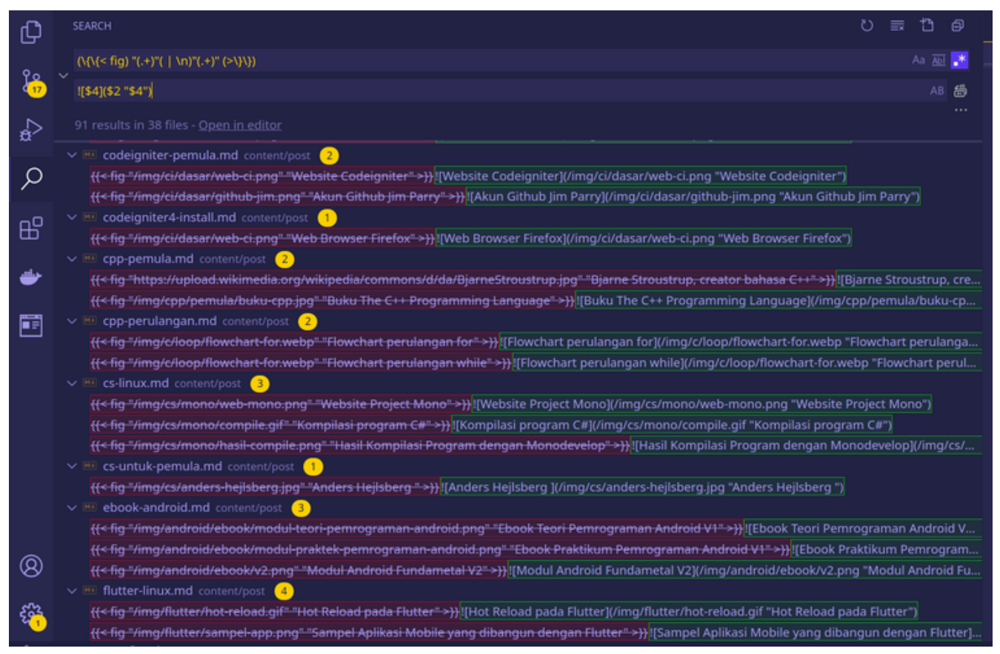Pada pola pencarian di atas, saya melakukan pengelompokan atau grouping sebanyak lima kelompok. Lalu melakukan subtitusi atau replace.
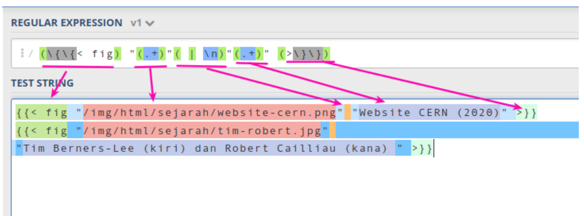Contoh lain :
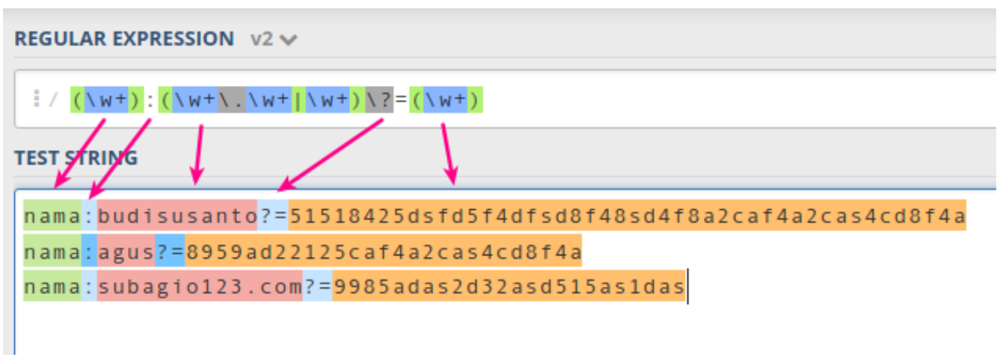Hasil setelah disubtitusi :
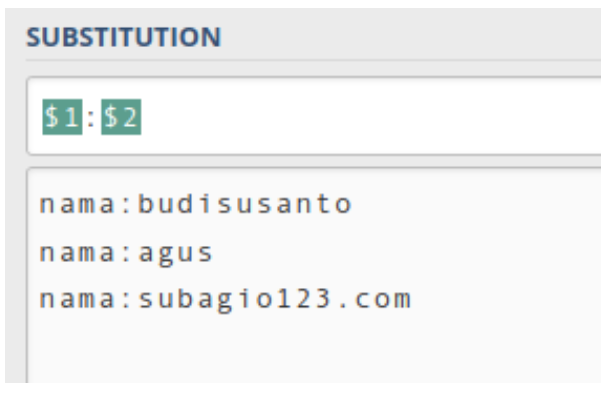